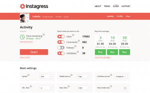
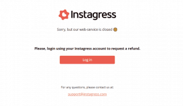
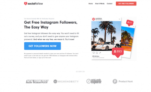
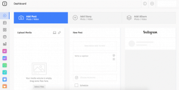
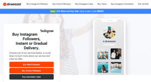
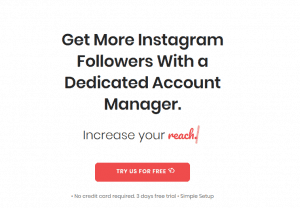
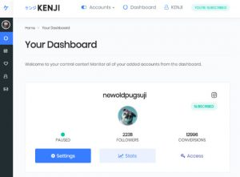

Looking for an Instagress alternative to fill the automation-shaped hole in your life?
Who could blame you?
Instagram is currently one of the most popular social media platforms in the world, with over 1 billion monthly active users. It’s also the place where you’re most likely to find engaged followers, as the people on Instagram are happy to like, comment and re-share your posts ’til the cows come home.
However, the sheer volume of users, combined with the fact that there are about 8 million other businesses using Instagram, can make the prospect of managing your social strategy a little daunting. It’s no wonder that people turn to growth tools like Instagress for help.
Automated offerings like Instagress made it easier to build your like and follower count rapidly on Instagram. The more followers you got, the easier it was to attract new business and outshine the competition.
However, now that Instagram is working on making the platform as “authentic” as possible, automated followers and like-bots have been kicked to the curb.
The question is, what can you do in 2020 now that Instagress is gone?
Why Did Instagress Get Shut Down?
First of all, it’s essential to understand why you need an Instagress alternative in the first place.
You don’t want to switch your automation efforts over to another tool, to find that the new one gets shut down too. Or worse, that it leads to problems for your account.
Instagress was a third-party growth service designed to help businesses expand their presence on Instagram. It worked by generating automatic “likes” and followers for the brand. The idea was to make sure that your company would appear on your target audience’s activity feed as often as possible.

On paper, Instagress was a good idea.
When you like other people’s accounts and pictures on Instagram, you improve your chances that they’ll like you in return. For a while, Instagress worked. It gave companies the growth that they needed. Of course, they weren’t getting real engagement or organic followers.
Unfortunately, Instagram didn’t like people cheating their way to the top of the Explore pages.
The social media platform started to implement stricter policies on how users could implement bots and automated tools. By 2017, Instagress had been officially shut down following a “request” from the team at Instagram HQ.

How to Choose an Instagress Replacement
Even now, people aren’t 100% certain why Instagress was chased off the web.
The consensus is that Instagress was going against Instagram’s terms of service, by driving engagement for brands through “artificial” means.
For businesses now in search of an Instagress alternative, it’s essential to be careful about the software you use going forward. Instagram is still cracking down on any tool that could promote the creation of spammy content. It’s also removing tools that make it harder for users to enjoy “authentic” experiences on social media.
While there’s no guarantee that any Instagram automation tool is entirely safe these days, we’ve looked at some of the top contenders online to bring you the options that are least likely to cause trouble for your brand as we move into 2020.
Here are just some of our software selections.
Instagress Alternative #1: SocialFollow
We don’t mean to blow our own trumpet here, but we are one of the safest Instagress replacements on the web. We designed our automated Instagram growth tool specifically to avoid any negative interactions with the Instagram algorithm, so you can rest assured that you’re not going to face any repercussions from the Instagram team.
With our software, you can kickstart your social growth quickly and securely, using a strategy that involves collaborating and connecting with a community that’s relevant to your niche.
SocialFollow works in a way that’s very similar to using an engagement hub. Essentially, you like about 10 accounts a day that is connected to your industry or brand in some way. We make sure that the people you’re reaching out to are relevant to your organization, so Instagram doesn’t think you’re engaging in any desperate like-4-like activities.
For every 10 people you connect with, SocialFollow generally gets you around 50 likes in return. That means you can earn an average of 1,500 followers every month.
It’s easy, it’s efficient, and most importantly – it’s safe. We’re not just running out and liking every account that we can find. We’re giving you an easy way to develop your network online by taking the “social” approach to social media. What could be more natural than that?

Instagress Alternative #2: Instato
The Instato Instagress replacement appeared rather recently on the web, as a solution for customers who couldn’t bare to manage their social media strategy without some automated assistance. When you sign up for an account, you get 3 days for free where you can test out the system – using it to automatically like, post, and comment on Instagram.
Importantly, we’d recommend not going to over-the-top with your automated content here. Although it can be useful to set up a scheduled post for your Instagram profile, you don’t want to rely on bots to do all of your posting for you. For instance, while some features of Instato are great, like the option to automatically monitor hashtags and “like” relevant posts, responding automatically to comments and DMs is rarely a good idea.
If you do decide to use Instato for your Instagram strategy, we’d recommend leaving human interactions, like comments and DM conversations to an actual member of staff. This should reduce your risk of embarrassing Insta #Fails.

Instagress Alternative #3: Skweezer
If you’re looking for a quick and straightforward way to improve the number of comments and followers on your Instagram account, Skweezer could be a good option. However, we do recommend using tools like this one with caution, as there is some “comment buying” involved – which can be a dangerous game to play with your social media strategy.
The only thing that makes Skweezer slightly less dangerous than most Instagram bots is that it’s not using any robotic followers or accounts. Instead, Skweezer has built a vast human network of real Instagram users. The people in this network are paid to like and follow the profiles of Skweezers clients. That means that you are getting interaction from real people, even if the engagement itself isn’t genuine.
When you sign up for Skweezer, you’ll pay for a subscription package that includes likes, comments, followers, and even views if you need them. You’ll need to pay for your service every month, and the price can get pretty high over time, depending on how much support you want.

Instagress Alternative #4: Riotly Social Media
Riotly is another Instagress replacement tool that’s grown increasingly popular in recent years. According to the website, Riotly is a social media service that will help you to track down the perfect social media strategy to suit your target audience. It works on helping you to determine what kind of work you need to do to attract the most customers.
So far, Riotly has maintained a pretty good track record with its customers. It doesn’t have any issues that we can see with Instagram’s terms of service. The good news is that rather than just paying for bots and fake likes, you’re getting an actual service that’s dedicated to growing your Instagram presence. That means that you’re not spending extra time trying to figure out how to use any complicated software.
Once again, Riotly offers the option to automatically manage your direct messages on Instagram too. However, we’d advise using this option with caution. A quick response telling a customer that you’ll get back to them soon is great. However, you can’t rely on a bot to manage your entire DM strategy on your behalf, or your customers will start questioning your humanity.
Instagress Alternative #5: Upleap
Speaking of social media marketing services that make your life easier, try Upleap. Upleap is a solution that takes a different approach to automating Instagram. Unlike many of the other options that we’ve covered so far, Upleap doesn’t rely on bots. Instead, it gives you a personal account manager who can handle your social media strategy on your behalf.
With your account manager, you get all the benefits of having a professional social support team on your staff. It also comes without the extra expense or management requirements. The Upleap team works behind the scenes to like comments, post new content, and develop your Instagram campaigns for you. This means you can focus on the things you do best in your business. Ultimately, it’s one of the easiest ways to take the stress out of running your Instagram strategy, without having to rely on bots.
Because there are no fake followers or bot accounts involved with Upleap, you can rest assured that the new followers you gain will be genuine. This is a fantastic Instagress alternative. Instagress used to give you the numbers you needed, without the actual value – it was all about quantity over quality with them.
Upleap offers a free trial to get you started. This means that you can make sure that the system works for you before you start funneling money into it. We’d recommend giving it a try.

Instagress Alternative #6: Instazood
Instazood is probably one of the most basic Instagress replacement options on the market. It comes with a bunch of automation options that allow you to get rid of some of the monotonous Instagram growth tasks . For instance, you can use Instazood to automatically like and comment on posts. Or you can use it for automatically following people that might be relevant to your business.
Again, we recommend not going over the top with the automation features available here. You’ll need to think carefully about how much you should automate. The good news is that there are some software settings to ensure that you’re not just liking and commenting at random.
Even if you don’t use Instazood for automation, there are still some other helpful things you can do with it. You can try things like scheduling your posts, researching hashtags, and adding unique filters.
Instagress Alternative #7: Kenji.AI
Finally, Kenji.AI is one of the most intelligent Instagram replacements we’ve seen during the second half of 2019. Unlike other basic Instagram bots, it comes with genuine machine learning tools implemented into the algorithm, which means that Kenji.AI learns as it goes.
The more you interact with the tool, the more it gets to know about your business. Kenji can even suggest what kind of hashtags you need to be using and following to improve your chances of a bigger follower count.
Kenji.AI gives you an in-depth look at what’s going on behind the scenes with your Instagram engagement strategy, so you can determine what you need to do to build better interactions with your target audience. With intelligent insights to guide you, you’ll be less likely to make the embarrassing mistakes.

Finding your Instagress Replacement
Instagram tools like Instagress might not be the most authentic way to gain likes and followers online, but they certainly made life easier.
Now that Instagress is dead and gone, it makes sense that you’d want to find a safer, more reliable tool. Fortunately, with our list above, you’ll have 7 great options to choose from – each with their own unique benefits.
Remember, be careful with your automation, don’t let your tools override your human touch on Instagram. If you need more guidance on how to make the most out of your social media strategy, subscribe to SocialFollow.
What’s your favorite Instagress alternative? Let us know in the comments below.


1 Comment